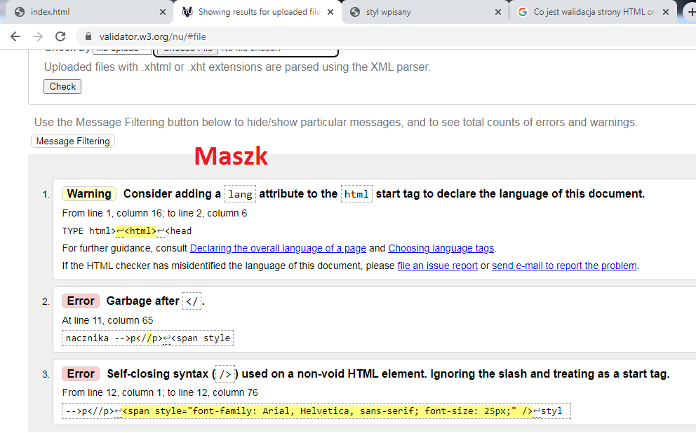
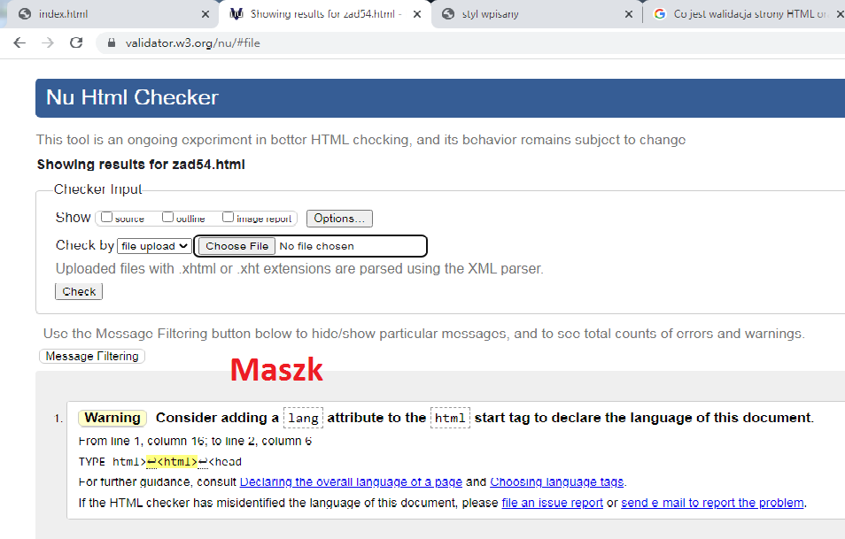

Walidacja
zatem jest to takie działanie, które ma na celu sprawdzenie obecności błędów na danej stronie internetowej, która jest w budowie. Walidacja strony internetowej to ściśle określone działania, mające na celu sprawdzenie czy budowa strony zawiera błędy.
styl wpisany wielkosc 40 pikseli
styl wpisany wieloscia standardowa z uzyciem znacznika -->p
styl wpisany wielkosc 25 pikseli
styl wpisany wieloscia standardowa-->span

